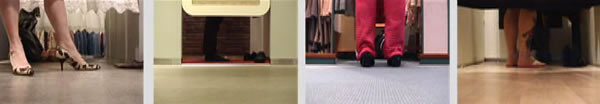

4 videoprojections looping, 1 soundtrack with dialogs in Norwegian, duration 20 min.
PLAY AN EXCERPT >>
|  |
I videoserien ”Prøverommet” kommer blikket fra den som bare er med. Den som faller i mild transe av repetisjonen. Kontemplativ shopping, mens man betrakter de handlende og prøvende; nesten nakne midt i byen, bare skjult av et forheng. Hvordan man fanges av sin egen iscenesettelse; forføres, fornøyes eller skuffes. Kontrasten mellom den høyhelte damen og knestrømpene innunder. Eller han som alltid får for lange og hun som alltid får for korte bukser.
Hverdag. Hele tiden.
(utdrag av tekst av billedkunstner Beathe C. Rønning)